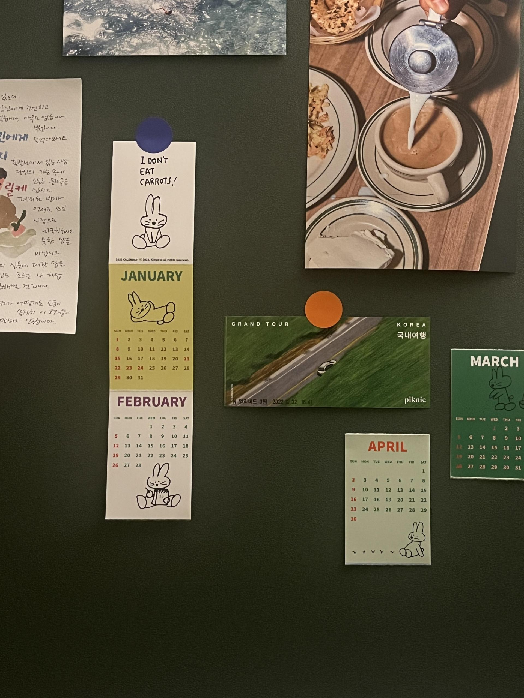
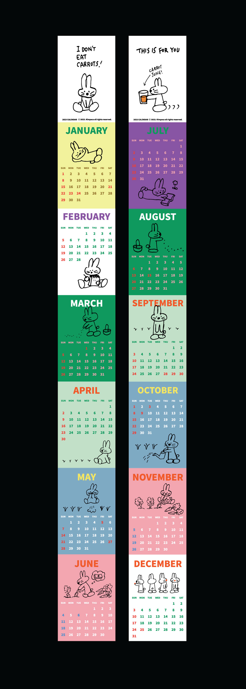
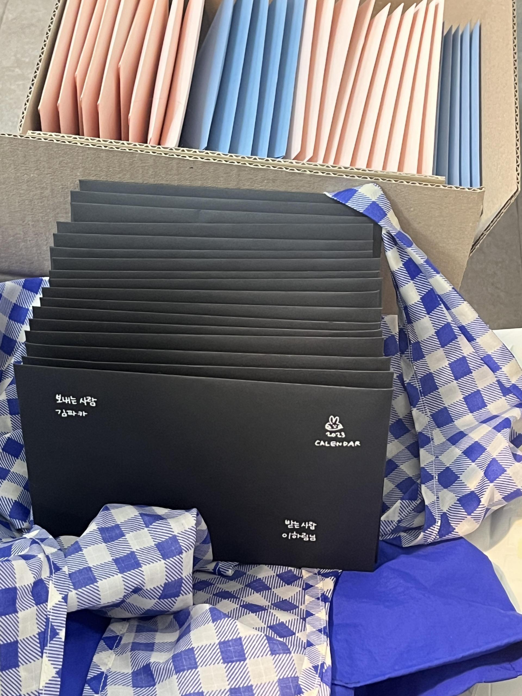
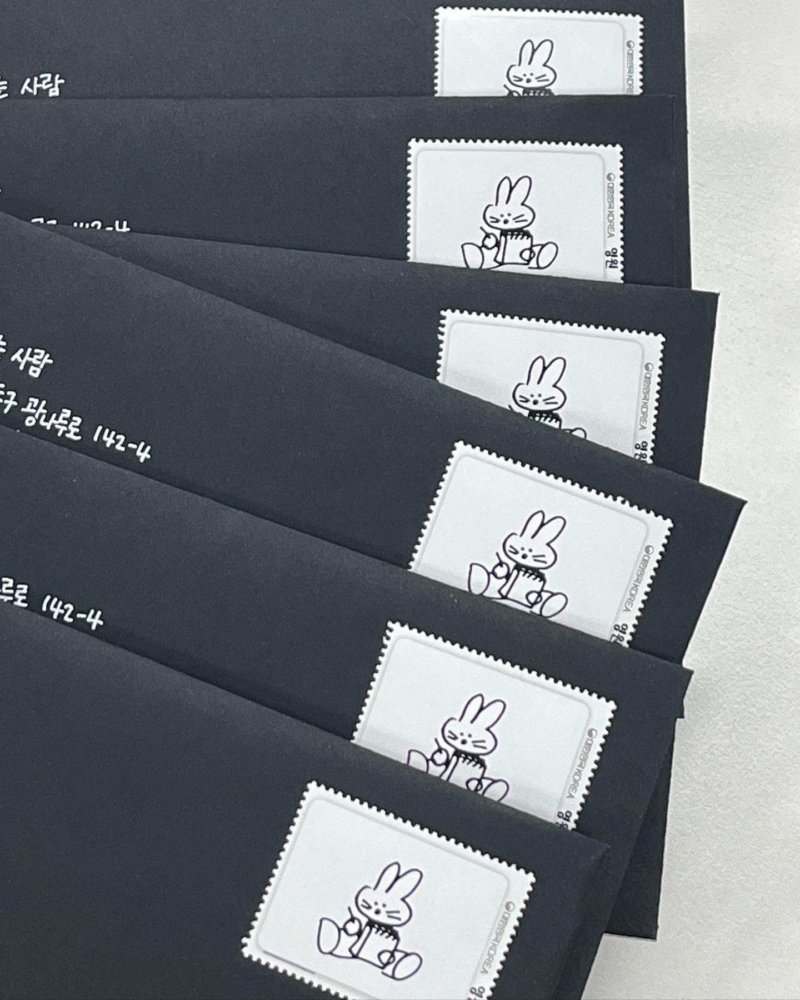
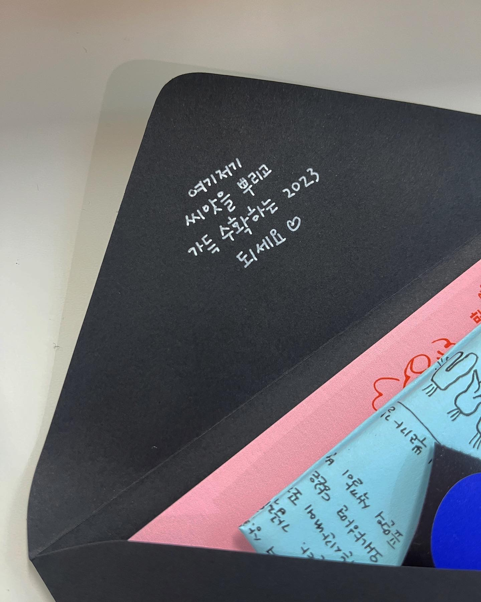
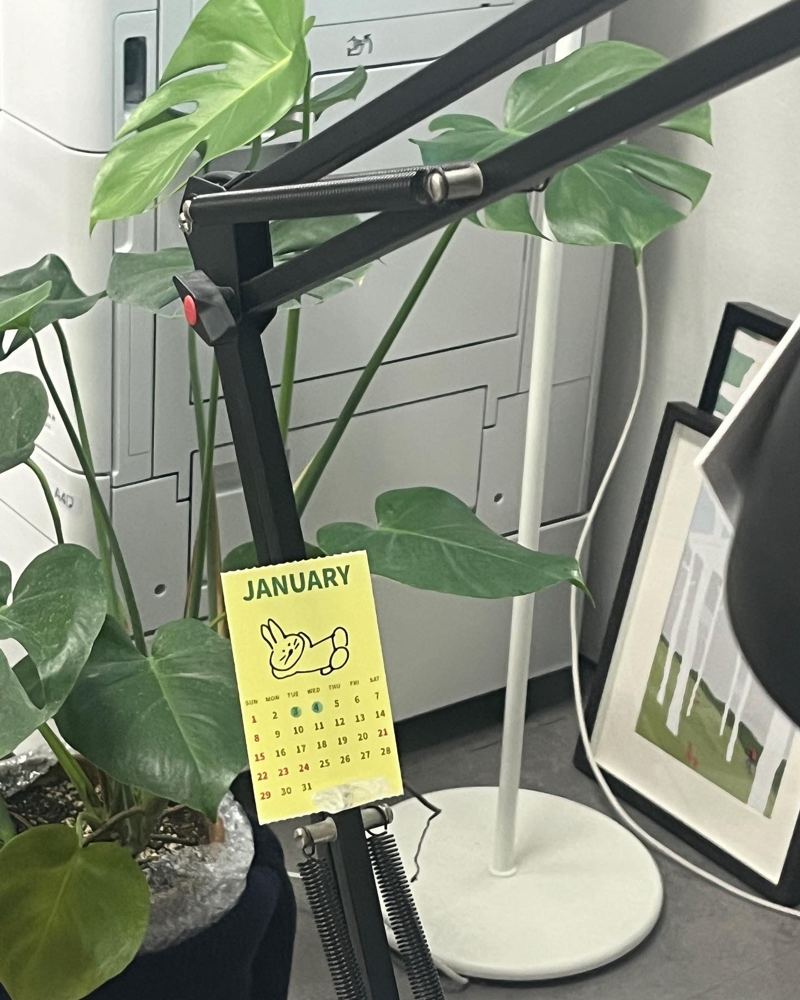
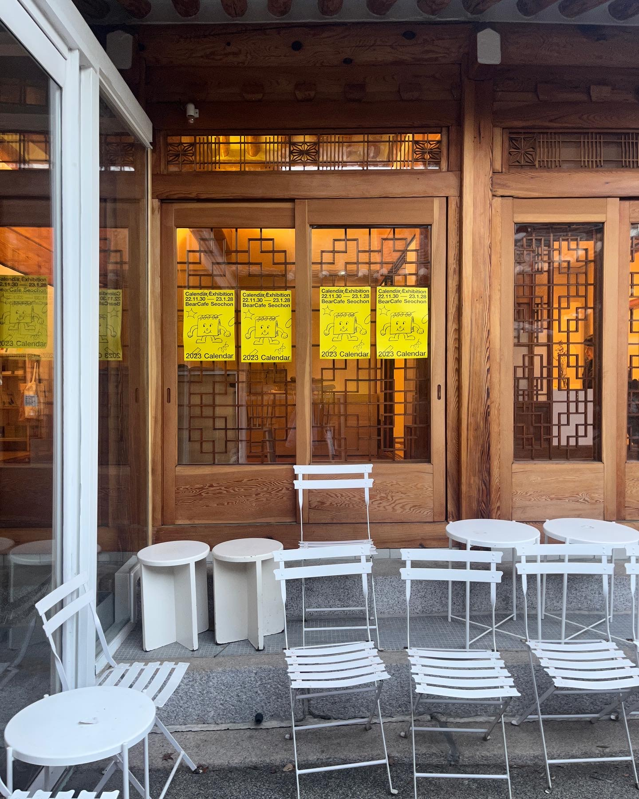
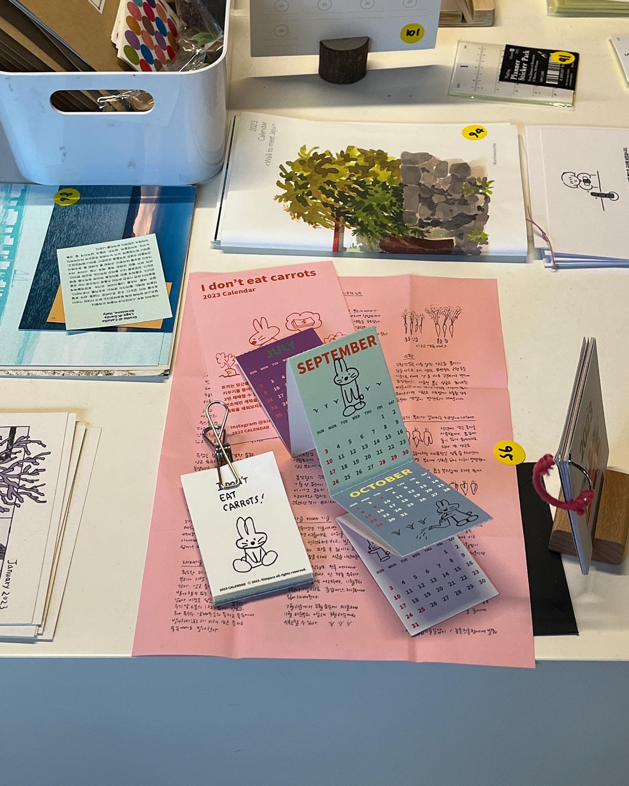
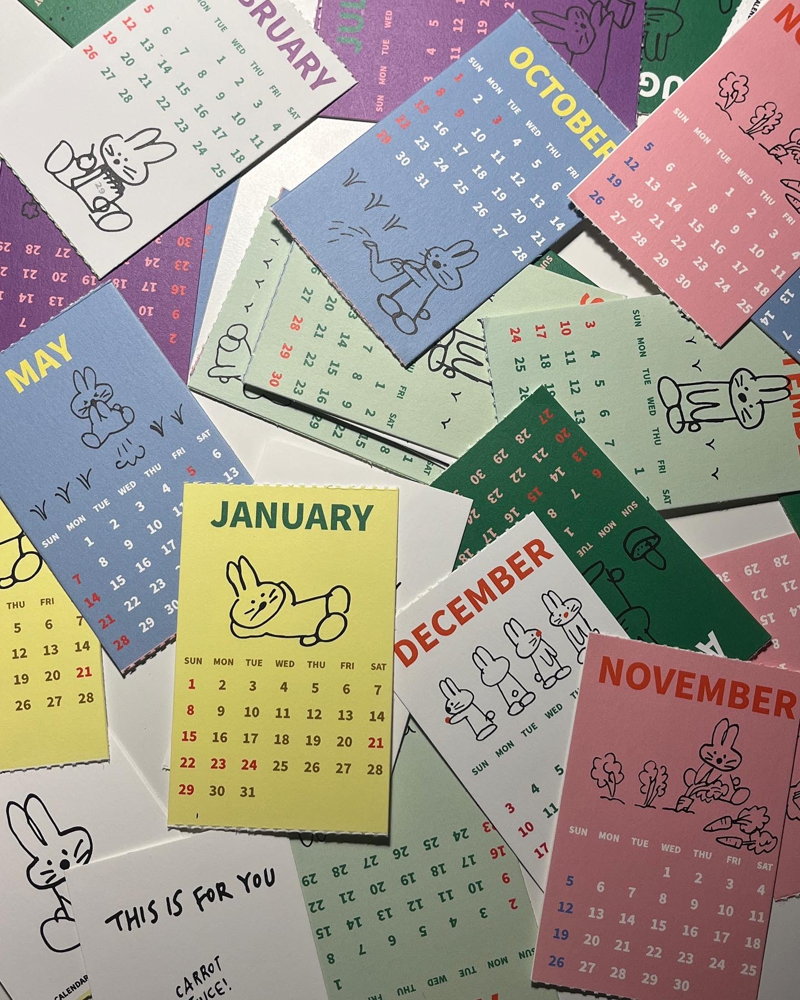
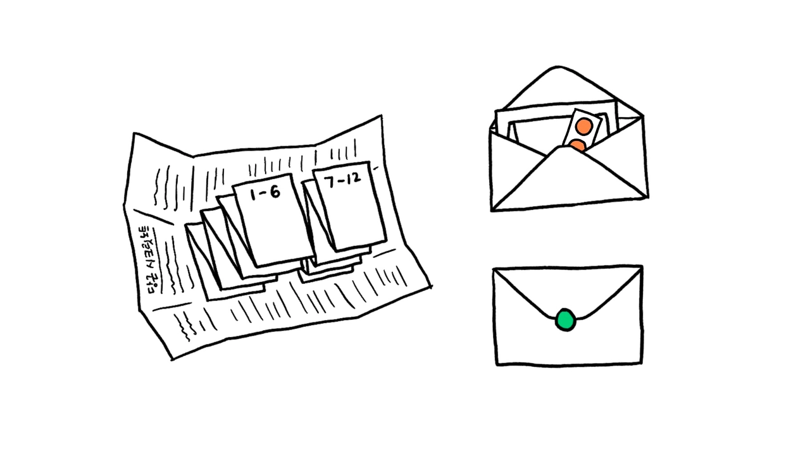
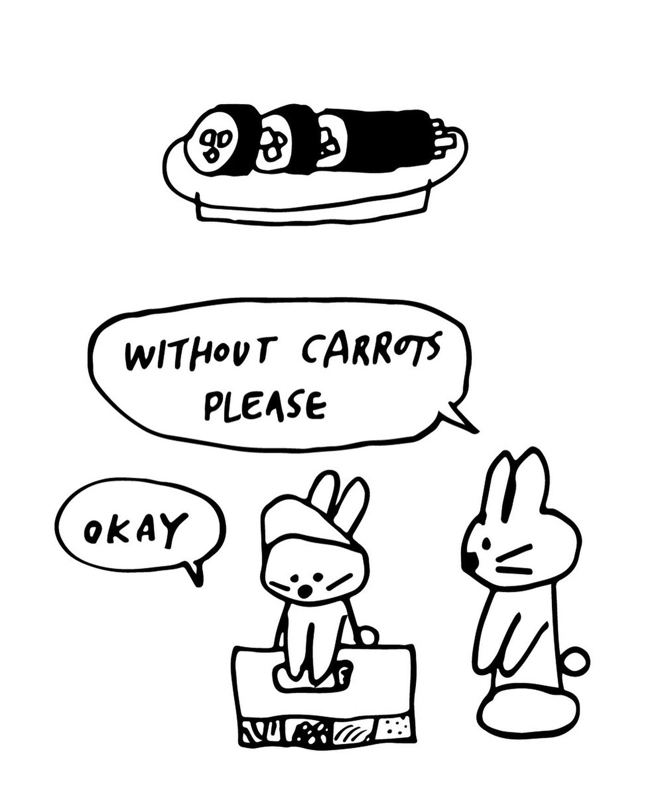
2022년 11월 겨울, 당근을 싫어하는 토끼 달력을 만들었습니다.
토끼는 당근을 좋아한다는 잘못알려진 사실을 고발하며, 먹진 않지만 키우기를 좋아하는 토끼 에피소드로 그린 달력입니다. 당근이 봄과 가을, 2번 재배할 수 있다는 작물임이 매력적으로 느껴졌고, 우리의 시간에도 연초에만 계획을 세우는 것이 아니라 3월, 8월에도 씨를 뿌리며 새롭게 계획을 세워보자는 의미를 담았습니다.
사실, 사계절에 한번씩 총 4번 뭐가 될진 모르지만 '좋아서 하는' 프로젝트를 만들어 기부를 해보고 싶었어요.
재밌었습니다. 연말이라 만나는 사람마다 선물하기도 좋았고 그 핑계로 편지도 많이 썼어요. 해보고 싶었던 것들을 다 해봤습니다. 똑똑 뜯어서 쓰는 미싱선도 넣어보고, 아코디언처럼 길쭉하게 접히는 형태로 만들어보고, 우체국에서 직접우표도 만들었어요. 서촌의 베어카페에서 달력전시도 했고요.
달력은 200개 중에 127개를 판매했습니다. 62개는 구글폼으로 주문받아 판매했고, 베어카페에서 11개, b급으로 재단된 달력 54개는 조금 할인해서 물건의집 플리마켓에서도 팔고, 용인의 독립서점 '북살롱벗'에서도 연말 선물로 구매해주셨어요. 제 홈페이지에서도 팔았고요. 나머지는 연말에 만나는 사람들에게 선물로도 나눠주고 이제 남은 건 스무개정도 되는 것 같습니다.
봄이 되기전에 겨울 프로젝트로 진행한 당근토끼달력을 부랴부랴 정산했습니다. 제작비를 제외하고 남은 온전한 수익이 무려 106,332원! (네.. 0이 하나 빠진 것 같은 기분이 드는데 계산기를 세번 두들겨도 10만원이 맞습니다) 멋찐 언니들은 기부금액이 적으면 자기 돈을 더 얹어서 두 배, 세 배로 하던데..
하찮은 제 계획은 이렇습니다. 딱 떨어지는 10만원은 투명하게 후원한다고 소문난 <바보의 나눔>에 기부를 하고요. 나머지 6332원은 … 아이스크림 사먹을게요. 🙃
지난 겨울 당근달력을 구매해주신 여러분 모두모두 고맙습니다! 덕분에 재밌는 것도 큥짝쿵짝 만들어볼 수 있었고 하찮고 투명하게 기부도 했어요. 다 덕분입니다. 고맙습니다.
4월 달력은 당근 싹이 나오는 그림입니다. 머릿속에 심어놓은 생각들이 하나둘씩 뾱 하고 튀어오르는 봄을 맞이하게 되기를!
사랑을 가득담아,
2023.3.28.화요일
In November 2022, I made a calendar featuring a rabbit who hates carrots.
This calendar was born from a desire to expose a common misconception — that rabbits love carrots. Instead, it follows the episodes of a rabbit who doesn't eat them, but loves to grow them. What drew me to carrots is that they can be harvested twice a year, in spring and autumn. That rhythm felt like a metaphor for how we live: rather than only setting goals at the start of the year, what if we planted new seeds in March and August too, and gave ourselves a second chance to begin?
I wanted to create a 'just for the love of it' project — once each season, four times a year — and donate the proceeds, whatever they turned out to be.
It was a lot of fun. Since it was the end of the year, it was perfect for gifting to everyone I met, and it gave me a good excuse to write lots of letters too. I tried everything I'd ever wanted to do: perforated tear-off lines, an accordion fold, and I even had custom stamps made at the post office. I also held a small calendar exhibition at Bear Cafe in Seochon.
Of the 200 calendars made, 127 were sold. 62 were sold through a Google Form, 11 at Bear Cafe, and 54 slightly imperfect ones were sold at a discount at the Mulgeon-ui-jip flea market. An independent bookstore in Yongin called 'Book Salon Beot' also purchased some as year-end gifts, and I sold some through my website too. The rest I gave away as gifts to people I saw over the holidays — I think there are about twenty left now.
Just before spring arrived, I finally tallied up the winter project. After production costs, the net profit came to a whopping 106,332 won! (Yes, it does feel like a zero is missing — but I've punched it into the calculator three times and it's definitely 100,000 won.) Cool people I admire will sometimes top up small donations to double or triple the amount with their own money…
My humble plan is this: the round 100,000 won goes to Babo-ui Nanoom, known for its transparent and trustworthy donations. And the remaining 6,332 won… I'm going to buy myself an ice cream. 🙃
Thank you so much to everyone who bought a carrot calendar last winter! Because of you, I got to make something silly and joyful, and I made a small, transparent little donation. It's all thanks to you. Thank you.
The April page features a drawing of carrot sprouts. Here's hoping that the ideas you've been quietly planting in your mind will start popping up one by one this spring!
With lots of love,
Tuesday, March 28, 2023